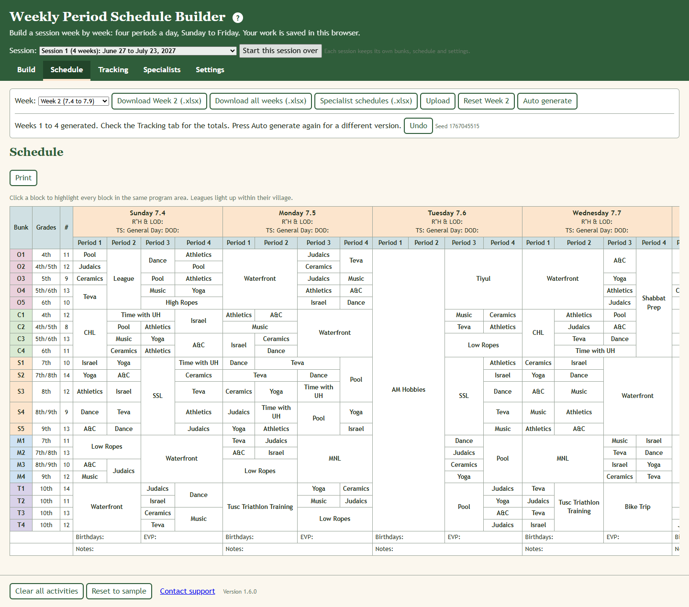
This page gets you from an empty page to a finished session. Each step is explained in full later in the manual.
The Weekly Period Schedule Builder holds the camp's period schedule: every bunk, four periods a day, Sunday to Friday, for each week of a session. You can fill it in by hand, or have the app build a week or a whole session for you and then change what you like.
It is for whoever makes the schedule: a director or a program staffer. If you are comfortable with a spreadsheet you will be comfortable here.
There is no login and nothing is sent anywhere. Everything you enter is saved by your web browser, on the computer you are using. That has three consequences.
Session 1 and Session 2 are kept separately. Switching from one to the other does not lose either.
This is where the schedule is entered and changed. Each row is a bunk: its name, grades and number of campers, then a box for every period of the week. The day headings carry the dates.
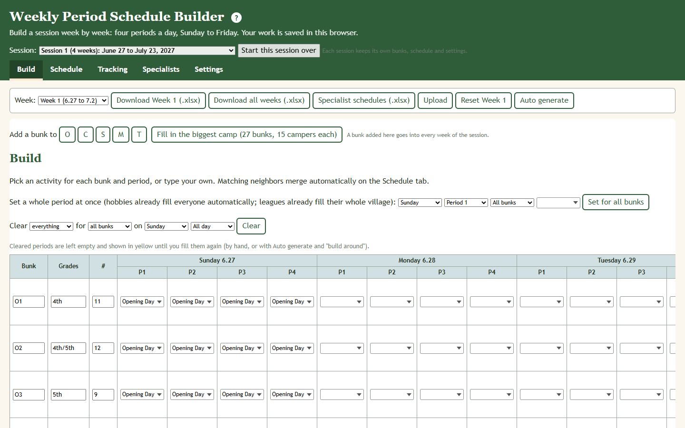
Above the grid are two tools, Set a whole period at once and Clear, both explained in chapter 3. At the end of each row are buttons to move the bunk up or down and to remove it. Above the grid are buttons that add a bunk to a village in every week, and one that fills in the biggest camp. Below the grid you can add an empty row, and from week 2 on, a button copies the previous week's bunks.
The finished grid, ready to print. Bunks doing the same thing in the same period are merged into one box. Click a box to light up every box in the same program area; a league lights up within its village. The Print button prints it.
How many times each bunk has each program area, for the week on screen and for the whole session. This is the place to check that things are fair. The last row, All bunks, adds everything up.
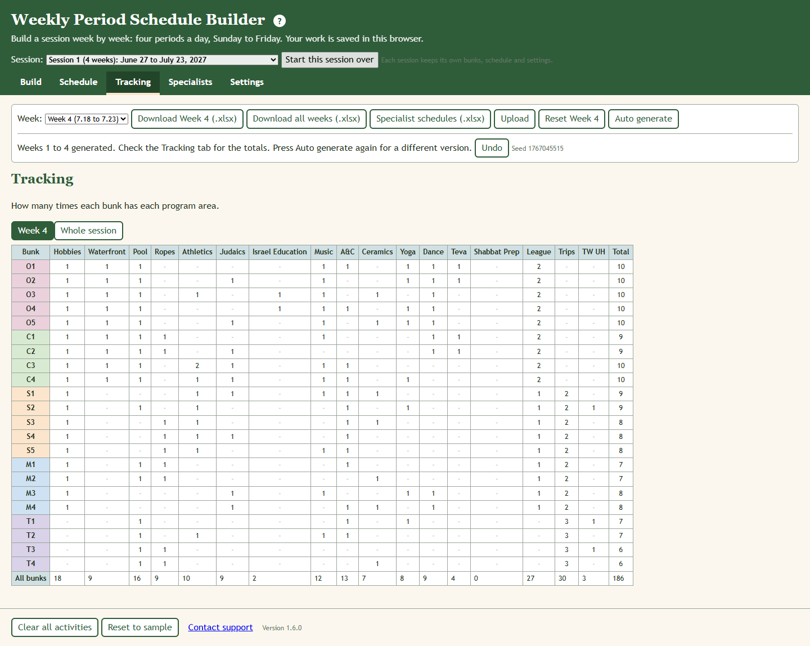
The schedule from one program area's side. Pick the area, and each week is a grid with days across and periods down. Each box says who comes, which visit it is for them in that area (counted from the start of the session), and how many campers. Print it for the specialist.
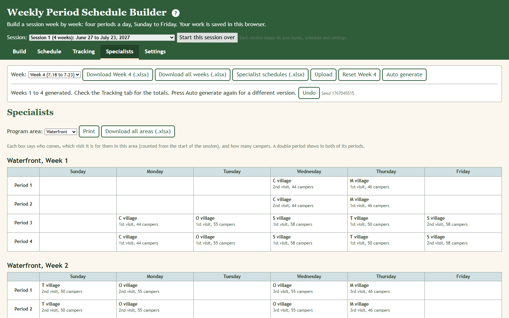
The numbers Auto generate works with: how often each program area happens, how many bunks it takes at once, who may share a period, and the session calendar. Chapter 7 lists every setting.
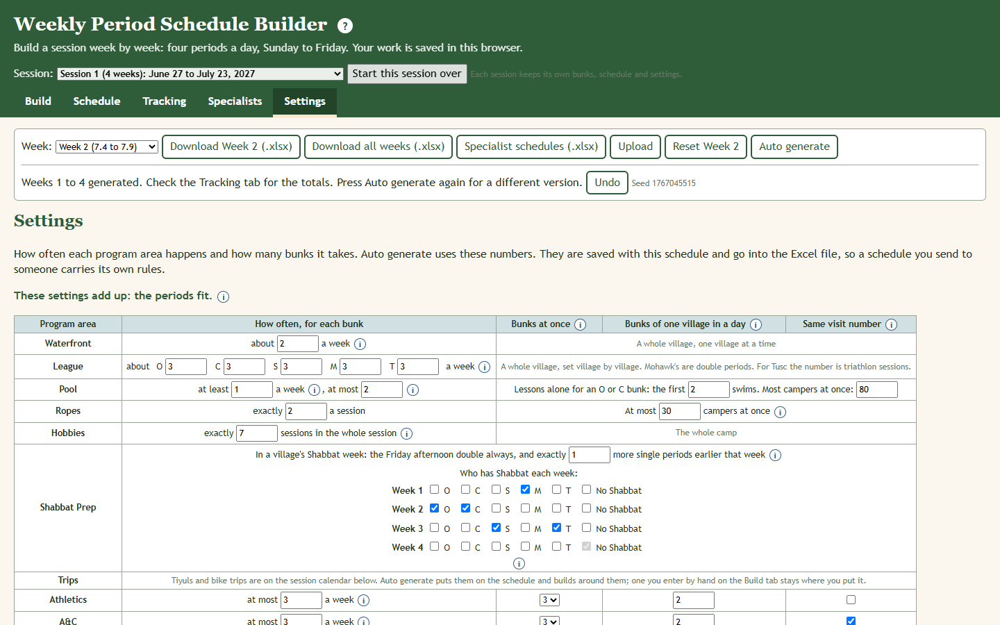
Above the grid, after Add a bunk to, there is a button for each village: O, C, S, M, T, and in Session 2 TC. One click adds the next bunk of that village (after O5 comes O6) to every week of the session, in its place in the list, with a starting grade and with the calendar already on its row. Type its camper count afterwards.
Fill in the biggest camp (27 bunks, 15 campers each) brings every village up to its most bunks in every week: 5 Onondaga, 6 Cayuga, 6 Seneca, 6 Mohawk and 4 Tusc, and in Session 2 four Taste of CSL bunks in week 1 as well. It also sets every bunk to 15 campers. The 15 is only a round number to plan with; nothing holds a bunk to it, and you can type the real counts over it. Bunks that are already there keep everything on their rows. It asks first.
Click a period's box and pick an activity from the list, or type to search. Activities are grouped by program area.
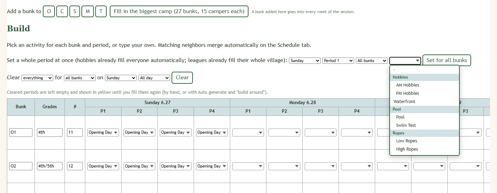
Choose the day, the period, All bunks or one village, and the activity. Then press the button, which reads Set for all bunks or Set for O village. This is the quick way to enter a trip.
Trips, Tiyuls and bike trips are on the session calendar and go onto the schedule by themselves (chapter 4). To put one somewhere else by hand, use Set a whole period at once with the activity Tiyul, Bike Trip or Trip for the village and the periods it is away. A trip you enter by hand stays where you put it, and the calendar does not add a second one for that village.
The Clear tool empties part of the week in one go: everything or one program area, for all bunks, one village or one bunk, on one day or the whole week, all day or one part of it. For example: Waterfront, for all bunks, on Tuesday, because of weather. It tells you how many periods it will empty and asks first.
The emptied periods turn yellow on the Build and Schedule tabs, so it is plain what still needs filling. A yellow period goes back to normal as soon as something is put in it. Remove the yellow marks takes the marks away and leaves the periods empty.
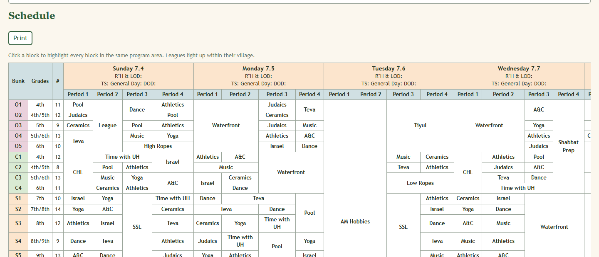
Anything you put in by hand can be kept while the app fills the rest. Enter what you want fixed, press Auto generate, and choose Keep what is there and build around it. Only the empty periods are filled. This is also how you refill yellow periods after a Clear.
| Session 1 | Session 2 | |
|---|---|---|
| Length | 4 weeks | 3 weeks |
| Dates, summer 2027 | June 27 to July 23 | July 26 to August 15 |
| Opening day | Sunday June 27. No periods; they start Monday. | Monday July 26. No periods; they start Tuesday. |
| Bunks it starts with | 5 Onondaga, 4 Cayuga, 5 Seneca, 4 Mohawk, 4 Tusc | 4 Onondaga, 4 Cayuga, 5 Seneca, 5 Mohawk, 4 Tusc, and Taste of CSL (TC1 to TC4) in week 1 |
| Special to it | Visitor's Day, Mass Program, village day on the last Sunday, the three-day Tusc bike trip, Hobby Culmination and Packing Time | Color War, the Tusc Triathlon, village day for everyone including Tusc |
Each session keeps its own bunks, schedule and settings. A session you have never opened starts from its template: its bunks, its numbers, and its calendar already on the schedule. The grades and camper counts it starts with are placeholders: change them to this summer's.
The calendar is everything that is not a period: opening day, the Tiyuls, the bike trips, village day (O-Day, C-Day and so on), Mass Program, Color War, Visitor's Day and the clean up. It starts as the session was in 2026, on this summer's dates.
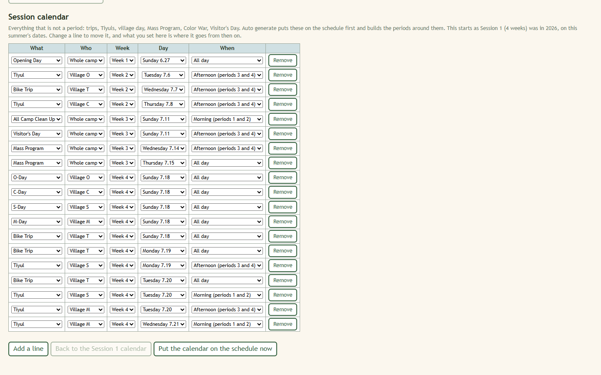
Each line says what, who (the whole camp or one village), which week, which day, and when (all day, morning, afternoon, or one period). To move something, change its line. You can also remove a line or add one.
| Session 1 | When |
|---|---|
| Opening Day | Week 1, Sunday, all day |
| Onondaga Tiyul | Week 2, Tuesday afternoon |
| Tusc mini bike trip | Week 2, Wednesday afternoon |
| Cayuga Tiyul | Week 2, Thursday afternoon |
| All Camp Clean Up, then Visitor's Day | Week 3, Sunday morning, then afternoon |
| Mass Program | Week 3, Wednesday afternoon and all of Thursday |
| Village day (O-Day, C-Day, S-Day, M-Day) | Week 4, Sunday, all day |
| Tusc bike trip | Week 4, Sunday, Monday and Tuesday, all day |
| Seneca Tiyul | Week 4, Monday afternoon into Tuesday morning |
| Mohawk Tiyul | Week 4, Tuesday afternoon into Wednesday morning |
| Session 2 | When |
|---|---|
| No Periods, then Opening Day | Week 1, Sunday, then Monday, all day |
| Tusc trip | Week 1, Tuesday, all day |
| Taste of CSL's week | Week 1, Tuesday to Friday |
| Onondaga and Cayuga Tiyul | Week 2, Sunday afternoon |
| Seneca Tiyul | Week 2, Monday afternoon into Tuesday morning |
| Mohawk Tiyul | Week 2, Tuesday afternoon into Wednesday morning |
| Village day for every village | Week 2, Thursday, all day |
| All Camp Clean Up | Week 3, Sunday, period 3 |
| Color War | Week 3, Monday and Tuesday, all day |
| Tusc Triathlon (the whole camp) | Week 3, Thursday afternoon |
Bunks named TC1, TC2 and so on are Taste of CSL. They are in camp for week 1 of Session 2 only.
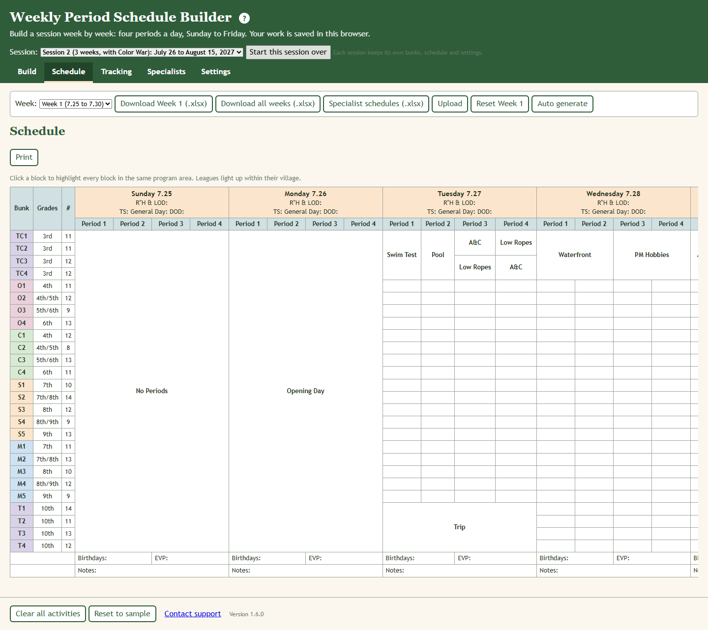
Auto generate builds the periods from the bunks on the Build tab. It puts the session calendar on first, where it is not there yet, and builds around it and around anything you entered by hand. It reads the other weeks of the session, so each bunk's totals stay fair across the whole session.
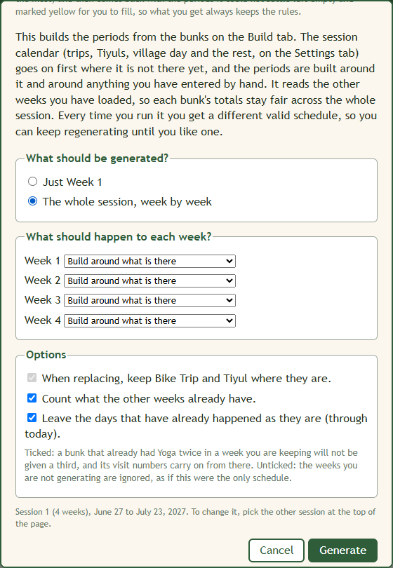
The session comes from the picker at the top of the page, not from the dialog.
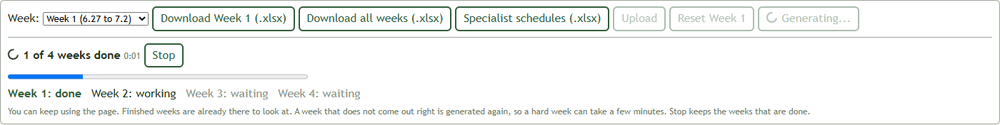
A whole session usually takes a few seconds to half a minute. In our own tests on one computer, four runs of Session 1 took 5, 5, 16 and 33 seconds, and four runs of Session 2 took 6, 6, 17 and 26 seconds. A slower computer will take longer.
The app tries a week several ways at once. If none comes out right it tries again, without saying anything except "try 2" in the panel. A try lasts 15 seconds at most, and a week is never worked on for more than 45 seconds in all.
If 45 seconds pass and no version of a week keeps every rule, the app hands back the best one it found, with the periods that broke a rule emptied and marked yellow. Nothing on the week breaks a rule. Fill the yellow periods by hand, or change a setting and generate again.
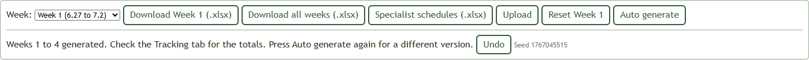
These are the rules a generated week keeps. They are written here in plain words; the app does not list them on screen.
Settings are saved with the session and go into the Excel file. A small i beside a number says more when you point at it.
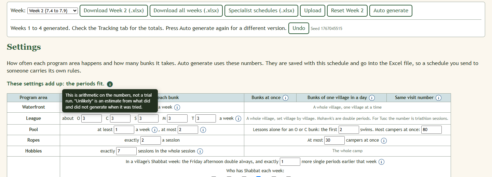
The page does the arithmetic on your numbers as you change them. It says one of four things.
| It says | It means |
|---|---|
| These settings add up: the periods fit. | Nothing to do. |
| Will come up short. | A schedule comes out, but the calendar leaves less room than the numbers ask for, so some bunks will end the session short of a few visits. Nothing has to change. Lower a number if you would rather choose what gives way. |
| Unlikely to work. | It adds up on paper, but settings this tight did not generate when they were tried. It says what to try. |
| Not possible. | The periods do not add up. It says what to try. |
| Setting | What it controls | Starts at | A reason to change it |
|---|---|---|---|
| Waterfront, about _ a week | Waterfront blocks a village has in a week, on average. | 2 | The lake is closed part of the summer. |
| League, about _ a week, for each village | League periods a week. Mohawk's are double periods. For Tusc the number is triathlon sessions. | 3 for every village | One village plays less often. |
| Pool, at least _ a week | Swims each bunk gets every week. | 1 | The pool is closed: set 0. |
| Pool, at most _ | The most swims in a week. A second swim is given a whole village at a time, to the village that has swum least. | 2 | Keep everyone to one swim. |
| Lessons alone, the first _ swims | How many of an Onondaga or Cayuga bunk's first swims are one bunk alone. | 2 | More or fewer lessons this year. |
| Pool, most campers at once | The most campers in the water together, unless it is one whole village. | 80 | Fewer lifeguards. |
| Ropes, exactly _ a session | Ropes blocks each bunk gets. Low first, then High, each a double period. | 2 | The course is closed for part of the session. |
| Ropes, at most _ campers at once | Bunks next to each other in a village go together up to this many campers. | 30 | Fewer staff at ropes. |
| Hobbies, exactly _ sessions in the whole session | Hobby half-days for the whole camp, in total. Every week gets its Friday morning first, then a midweek one, then Sunday mornings. | 7 | More or fewer hobby days. |
| Shabbat Prep, exactly _ more single periods | Single periods of Shabbat Prep earlier in a village's Shabbat week, on top of the Friday afternoon double. | 1 | A village needs more or less time to prepare. |
| Who has Shabbat each week | Tick the village or villages for each week, or No Shabbat. | Week 1 Mohawk, week 2 Onondaga and Cayuga, week 3 Seneca and Tusc | This summer's turns are different. |
| Athletics and A&C, at most _ a week | The most of each a bunk has in a week. They fill whatever periods the other areas leave. | 3 | Rarely. |
| Music, at least _ a week, at most _ | The weekly Music, and how far it may go to fill a period. | 1 and 2 | The Music specialist is part time. |
| Time with UH, at least _ a session, at most _ | Time with the Unit Head: what every bunk gets, and how far it may go to fill a period. | 1 and 3 | Unit heads want more time with bunks. |
| Judaics, Israel, Teva, Ceramics, Yoga: at least _ a session, at most _ | "At least" is what every bunk is given. "At most" is how far it may go to fill a period that would otherwise be Athletics or A&C. | Judaics 2 and 3. Israel 2 and 2. Teva 3 and 3. Ceramics 2 and 3. Yoga 2 and 3. | A specialist is hired, leaves, or is part time. To stop using an area, set both to 0. |
| Dance, by village, a session, exactly | Dance is set village by village. | O 3, C 2, S 3, M 1, T 2 | A village wants more or less Dance. |
| Bunks at once | How many bunks an area takes in one period. | Athletics 3, A&C 3, Ceramics 1, the others 2 | A second specialist, or a bigger space. |
| Yoga, at most _ campers at once | Yoga goes by campers, like ropes: neighbours in a village go together up to this many. | 20 | The Yoga space holds more or fewer. |
| Bunks of one village in a day | The most bunks of one village an area sees in one day. | 2, and 1 for Ceramics | A big village: see below. |
| Same visit number | Ticked: bunks that share a period there must be on the same visit. Unticked: any visit will do. | Ticked for everything except Athletics and Time with UH | An area where it does not matter who has been before. |
| In the last week of the session, bunks that share a period may be one visit apart | A little slack in the last week, when there is the least room to line bunks up. | Off | The last week keeps coming back with gaps. |
Session 2 starts with two numbers lower than Session 1: Yoga is at least 1 and at most 2, and Dance is one fewer for every village. In Session 2 Tusc also gets Ceramics once and one ropes block, High Ropes, because it is the same campers as Session 1. Those two Tusc numbers come with the session and are not on the Settings tab.
When someone is hired for something new, such as archery or martial arts, type its name in the last row of the table, choose its numbers, and press Add. It becomes an activity you can pick on the Build tab, a column on the Tracking tab, a tab in the specialist schedules, and Auto generate gives it to every bunk as single periods. Up to six can be added. An added area has a Remove button beside its name. To stop using an area that came with the app, set both its numbers to 0.
Three choices cover most camps:
These are for the areas where bunks may be together. Athletics takes any bunks, Tusc bunks always share with each other, and the pool keeps its own rules whatever is chosen here.
Advanced: customize sharing opens a grid with a box for every pair of bunks. A ticked box means the two may share. Tick or untick any pair; a box you change is outlined, and it stays that way whatever the three choices are set to. Pointing at a box lights up the two bunks it is for. Undo the changes on the grid puts every pair back.
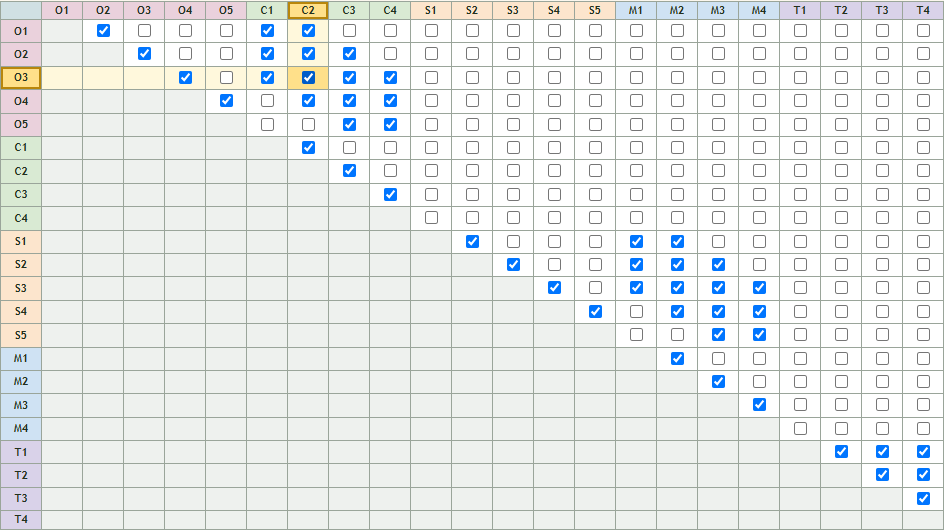
The biggest Session 1 camp is 5 Onondaga, 6 Cayuga, 6 Seneca, 6 Mohawk and 4 Tusc. With six bunks in a village the usual numbers leave too few places, and weeks come back with empty periods. When a village has six bunks or more, the Settings tab shows a button, Use the suggested settings, and the Auto generate dialog offers the same thing, ticked. They are:
In our tests, six whole sessions with that 27-bunk camp at 15 campers a bunk and these settings all came out complete, in 5 to 30 seconds each. With the usual numbers the same camp came back with empty periods in weeks 1 and 2. With full bunks only one fits at Yoga at a time, so expect bunks to end the session short on Yoga.
Reset to the default settings puts every number back to what the session starts with. It does not touch the schedule.
| Button | What is in the file |
|---|---|
| Download Week N (.xlsx) | The week on screen on a tab named "Week N", a Tracking tab for that week, and the settings tabs. |
| Download all weeks (.xlsx) | One tab for each week that has bunks, a "Whole Session Tracking" tab, and the settings tabs. |
| Specialist schedules (.xlsx) | One tab for each program area, laid out like the Specialists tab. This file is for reading and printing; it cannot be uploaded back. |
The settings tabs are Settings (one row per program area), Main areas (Waterfront, league, pool and the rest, and which session the file is from), Sharing, and, when you changed the calendar, Calendar.
Upload reads every "Week N" tab in a file, however many there are, and tells you which weeks it will load and which it will overwrite before it does anything. A file with settings in it brings them along and replaces the ones on screen. A file that was saved from the other session is loaded into that session, and the session on screen is kept as it is.
| Kept through a download and upload | Not kept |
|---|---|
| Bunks: names, grades, camper counts. Every period, write-ins included. Day details. All settings. The session calendar, when it was changed. Which session it is. | The yellow marks left by the Clear tool. The chance to Undo. The Tracking and Specialists tabs are worked out again from the schedule, not read from the file. |
You can edit the file in Excel or Google Sheets and upload it again. Keep the tab names and the header rows as they are.
The Schedule tab has a Print button. For a specialist, either print the Specialists tab from your browser, or download Specialist schedules (.xlsx) and print the tab you want from Excel. Landscape paper suits both.
Each of these asks before it acts, except where noted. None of them can be taken back afterwards. Download all weeks first if there is anything on the page you might want again.
| Button | What it does |
|---|---|
| Start this session over | Throws away the session's bunks, schedule and settings, and starts it again from its template. |
| Reset Week N | Removes every bunk and every activity from the week on screen. |
| Clear all activities (bottom of the page) | Empties every period of the week on screen. Bunks stay. The calendar items on that week go too. |
| Reset to sample (bottom of the page) | Replaces the week on screen with a sample set of bunks and no activities. |
| Remove, at the end of a bunk's row | Deletes the bunk and its whole row. It does not ask first. |
| Clear, on the Build tab | Empties the periods you described. They are marked yellow, so you can see where, but what was in them is gone. |
| Upload | Overwrites the weeks that are in the file, and the settings if the file has them. |
| Fill in the biggest camp | Adds bunks to every week and sets every bunk's camper count to 15. The counts that were there are gone. |
| Add a bunk to O, C, S, M, T | Adds a bunk to every week of the session. It does not ask first. Remove it again week by week. |
| Use Week N's bunks (Build tab, from week 2 on) | Replaces the week's bunks, and clears its activities. |
| Reset to the default settings | Puts every setting back, including a changed calendar and the sharing grid. |
| Auto generate, with Replace or Regenerate | Clears the week before building it. This one has Undo, until you change something by hand. |
The app could not find a version of that week that keeps every rule inside 45 seconds, so it emptied the periods that broke one. Fill them by hand, press Auto generate again for another try, or loosen a setting. If a village has six bunks, use the settings for big villages.
That is information, not an error. The calendar leaves less room than the numbers ask for, so some bunks will end the session a visit or two short of something. Auto generate fits in as many as it can. Session 2 says this from the start, because it is short and Color War takes two days.
The numbers ask for more than there are periods or places. The message says what to try, usually a lower "at least", or two bunks at once.
A week is never worked on for more than 45 seconds, so a four-week session cannot take more than about three minutes. If it is slow every time, close other programs, or other browser tabs with this page open. Stop keeps the weeks that are done.
The village is the first letter of the bunk's name. A bunk called "Onondaga 3" is in village O, and so is one called "Oak". A name that starts with TC is Taste of CSL, not Tusc.
The app still works. Without a grade it goes by the bunk's place in its village, and without a count it assumes 12 campers.
The run stops. The weeks that had already appeared are kept. Press Auto generate again for the rest.
The calendar only fills empty periods. Clear the old one on the Build tab, then press Put the calendar on the schedule now.
It does not when the one you entered is labelled Tiyul. If you wrote it in under another name, the app cannot tell it is the Tiyul. Use the activity called Tiyul.
The browser's saved data was cleared, or you are on a different browser or computer. Upload your last Excel file.
Use Contact support at the bottom of the page.
| Term | Meaning |
|---|---|
| A&C | Arts and Crafts. |
| Bunk | One cabin group. A row on the schedule. |
| Village | A group of bunks of about the same age: Onondaga (O), Cayuga (C), Seneca (S), Mohawk (M), Tusc (T). The first letter of a bunk's name. |
| Period | One of the four activity slots in a day. Periods 1 and 2 are the morning, 3 and 4 the afternoon. |
| Double period | One activity across both periods of a morning or an afternoon. |
| Program area | What an activity counts toward on the Tracking tab. Low Ropes and High Ropes both count as Ropes. |
| Visit number | Which time this is for a bunk at an area, counted from the start of the session. |
| League | A village's own sports league: League (Onondaga), CHL (Cayuga), SSL (Seneca), MNL or MAL (Mohawk). Tusc has triathlon training instead. |
| Tiyul | A village's trip out of camp. |
| Hobbies | A half-day when the whole camp does chosen activities: AM Hobbies or PM Hobbies. |
| Time with UH | Time with the Unit Head. |
| Teva | The Teva program area. |
| Shabbat Prep | A village getting ready to lead Shabbat, run by the Music and Judaics specialists. |
| Mass Program (MP) | A program for the whole camp that takes the place of periods. |
| Village day | A day a village spends together instead of at periods: O-Day, C-Day and so on. |
| Color War (CW) | Two days of Session 2 with no periods. |
| Taste of CSL (TC) | Younger campers who come for the first week of Session 2. |
| Session calendar | The list, on the Settings tab, of everything in a session that is not a period. |
| Auto generate | The button that builds the periods for you. |
| Build around | Generating a week while keeping what is already on it. |
| Yellow period | An empty period that was cleared, by you or by Auto generate, and still needs filling. |
| Write-in | An activity you typed that is not in the list. It is kept, and not counted in Tracking. |